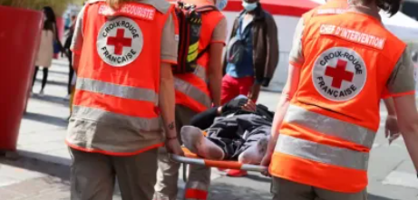

Pourquoi devenir bénévole?
Vous avez envie de vous sentir utile ? Vous voulez aider les personnes vulnérables ? Vous souhaitez mener en
équipe des projets solidaires valorisants ?
Autant de bonnes raisons de rejoindre les 60 000 bénévoles de
la Croix-Rouge française !
Formateur aux gestes qui sauvent, maraudeur à la rencontre des personnes
sans-abri, secouriste, animateur jeunesse…, il y a forcément une mission de bénévolat pour vous.
Devenir
bénévole, c’est tout simple : selon vos disponibilités, nous trouvons près de chez vous la mission qui vous
correspond, et nous vous formerons en quelques jours.
